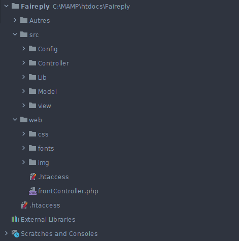
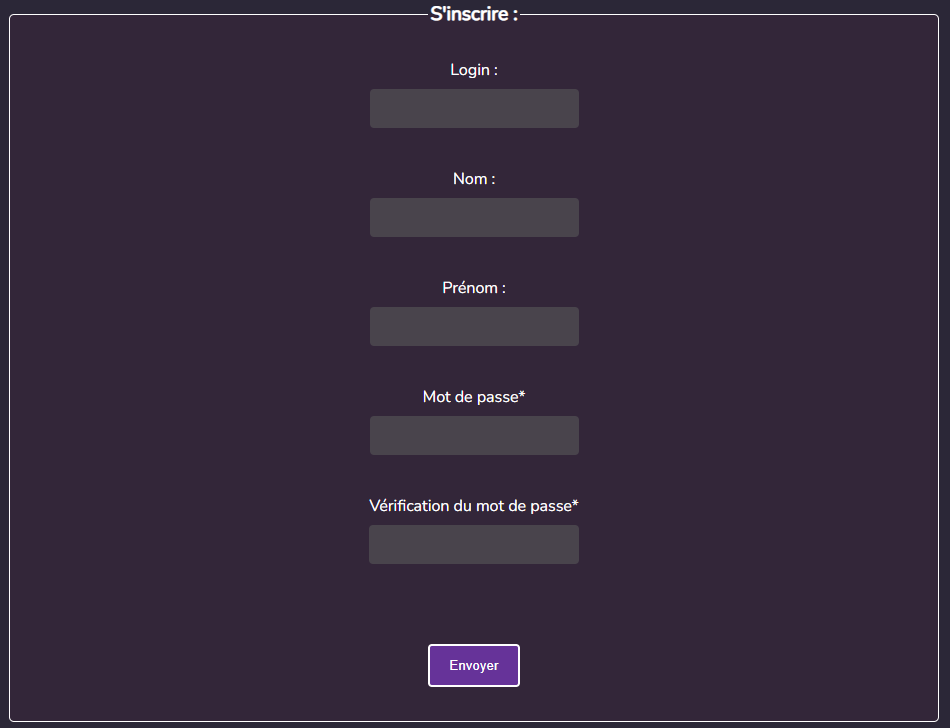
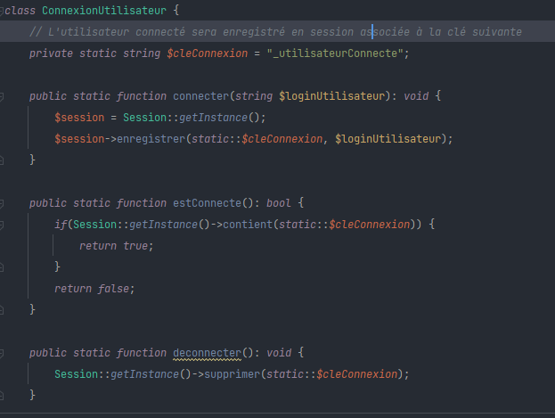

Site Vitrine
Ce site a été, au départ, un simple sujet de devoir en cours de PPP (Projet Personnel et Professionnel), mais j'ai décidé de le faire entièrement à la main sans logiciel no-code pour développer mes compétences et en apprendre de nouvelles en autodidacte. Cela m'a permis de faire un site montrant correctement une partie de mes compétences en front-end.
Presentation en gif:
Faireply est un site de questions, réponses et votes. Le but du site est de laisser certains utilisateurs poser des questions ouvertes dont les réponses seront séparées en plusieurs sections prédéfinies par l'organisateur. Ce site a été codé entièrement en HTML, CSS et PHP, mais le projet m'a conduit à travailler d'autres langages tels que SQL et PL/SQL.
Le patron MVC:
Pendant le projet Faireply, j'ai utilisé le patron de conception MVC pour organiser et structurer le code de mon application. Ce choix m'a permis de séparer la logique métier, la présentation et la gestion des données de manière claire et efficace.
Les compte:
j'ai pu, lors de ce projet, participé au code de création et manipulation de code, ainsi que géré la connectivité des utilisateurs. J'ai pu coder en sql et php mais aussi html css pour les view.
 Autre code:
j'ai pu, aussi, crée et faire marcher d'autre functionality comme des formulaires de création de question. Des réponses écrite a plusieurs ...
Lors d'un TD de JavaScript j'ai créé un simple jeu en ligne, le champ de mines. Le but de ce jeu est de déplacer le personnage sur le plateau et le jeu vous indiquera le nombre de mines autour de vous à ne pas toucher. Lors de ce TD j'ai pu apprendre beaucoup de base en JS, et j'ai pu implémenter des fonctionnalités supplémentaires au sujet initial.
Action demandée:
Dans les consignes de départ de ce td les actions était simple, il fallait qu'un petit bonhomme apparaisse dans la ligne du bas, un trésor en haut et des mines aléatoires ainsi qu'un text qui indique le nombre de mines autour. Cette partie m'a permis d'apprendre des bases de JavaScript, que je ne connaissais pas à ce jour.
(ci-dessous une image du jeu ainsi que du code)
Action supplémentaire:
Intrigue et Intéressé par ce que m'avait fait connaitre ce TD j'ai voulu en apprendre davantage, j'ai donc créé des functionality supplémentaire, comme un pouvoir permanent de voir les mine pendant peu de temps ou encore certain paramètre en plus.
(ci-dessous une image du jeu ainsi que du code)
Lors de ma première année de BUT informatique, j'ai dû, dans un projet, créer un jeu se nommant Les aventuriers du rail. Le but de ce projet était de recréer ce jeu de société en java et javafx. Ce projet m'a particulièrement plu par sa difficulté et sa liberté des choix.
Java FX:
l'ors de ce Projet j'ai dû travailler avec du javaFX. J'ai été emmener à créer une interface Pour le jeu des aventuriers du rail. J'ai du géré une interface avec des objets pouvant être selection et parfois qui peuvent disparaitre.
(exemple de code ci-dessous )
J'ai aussi était emmené à gérer des binding (soit la création d'action en d'action d'une interaction avec l'utilisateur), sur des boutons et des images dans le but de créer les different action du jeu.
(exemple de code ci-dessous )